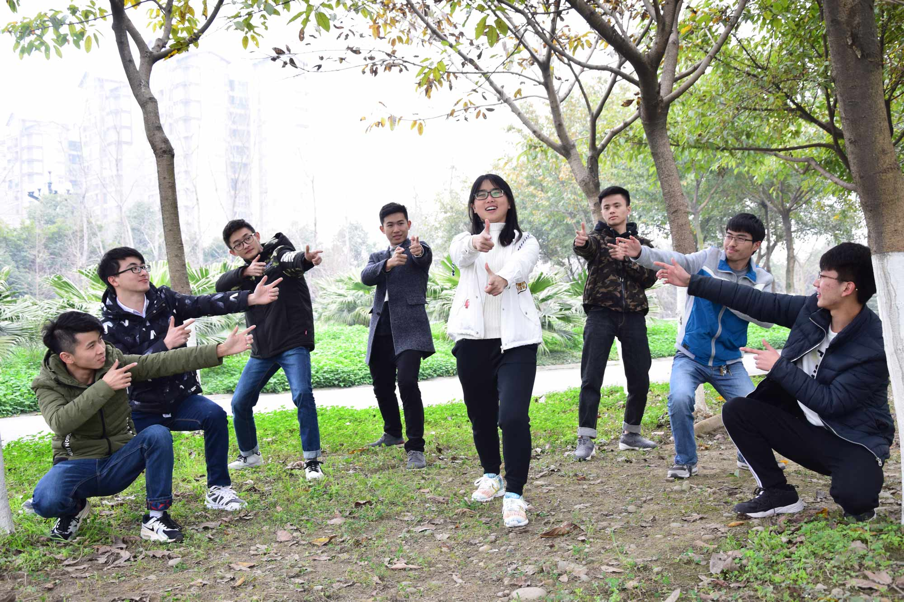
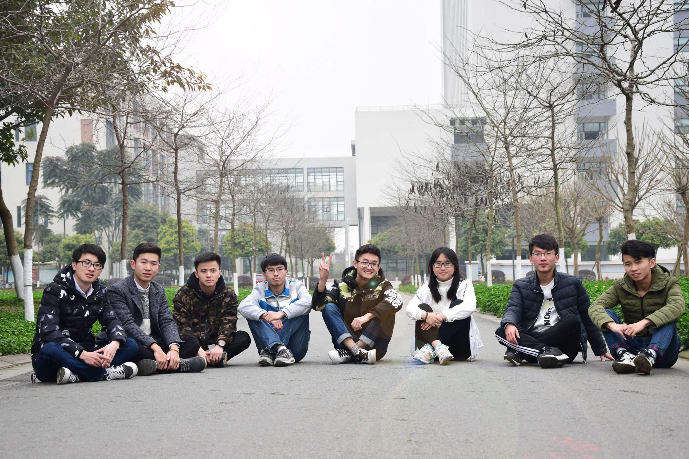
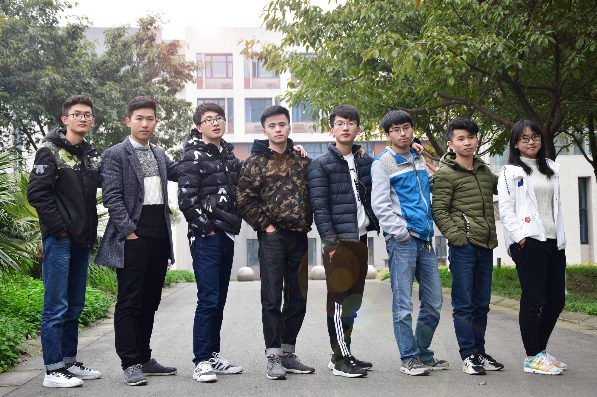
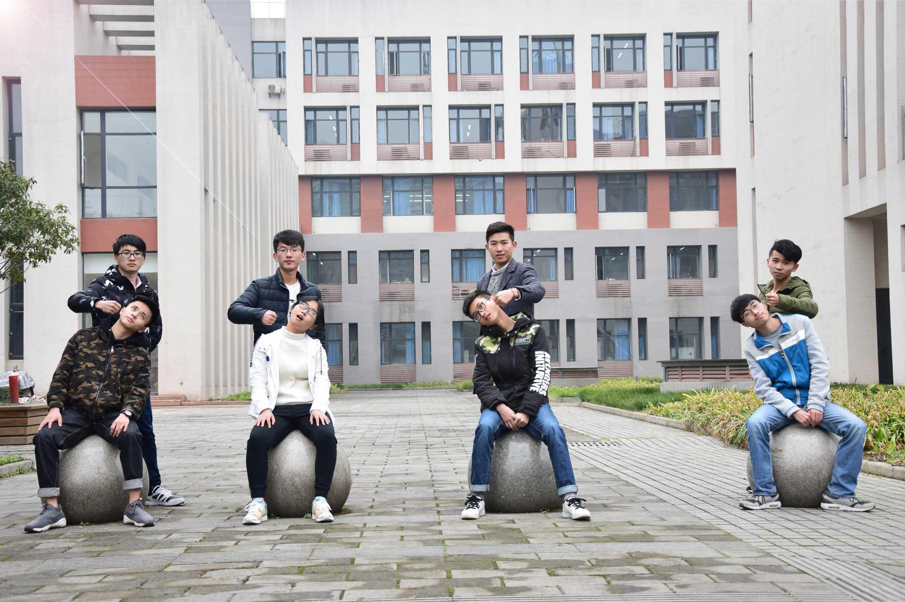

- 
- 
- 
- 
Web backend development
web开发作为翼灵物联网工作室发展最快的方向，完成工作室官网前后端搭建，形成了从前端网页到后端服务器架构的完整培养模式。随着从互联网到物联网的转变，web服务成为物联网系统的核心组成，稳坐第一把交椅。本团队WEB开发方向以项目外包为推动。培养内容涵盖J2EE，数据库，通用框架和WEB服务端技术。本方向旨在搭建鲁棒最强的后台系统，给用户最流畅与舒适的体验。
The team members
- 王萍
- 2015级物联网工程专业
- Web开发组组长
- 项目经历
- 建立团队网站及团内签到系统
- springboot搭建的办公系统
- 基于微信平台的智能家居监控
- 基于SSM的小型电商网站
- 座右铭：雄心志四海，万里望风尘。
- 邮箱：18244217741@163.com
- 赵禾才
- 2014级物联网工程专业
- Web开发组组员
- 目前掌握S2SH和SSM整合框架，开发过基于S2SH的OA 办公系统和基于SSM的秒杀系统，目前准备学习一些必要和掌握的前端基础和Radis技术。
- 邮箱：1161650078@qq.com
- 周成
- 2015级物联网工程专业
- Web开发组组员
- 项目经历
- 翼灵物联工作室招新网站
- java单机版坦克大战
- 多终端校园服务平台后端搭建
- 座右铭：一切都应该归于简单
- 邮箱：zhoucheng05_13@163.com
- 陈宇飞
- 2016级物联网工程专业
- Web开发组组员
- 学习了一些java的基础，目前在完成java的深入学习和坦克大战的项目以及web前端的学习。
- 邮箱：892487490@qq.com
- 李攀
- 2016级物联网工程专业
- Web开发组组员
- 对于学习，我会以百分百的热情去对待，对于做事，我会全力以赴。我希望可以通过自己的努力，成为一个优秀的人，实现自己的人生价值。
- 邮箱：706390664@qq.com
- 敬丽丽
- 2016级物联网工程专业
- Web开发组组员
- 热情积极、喜欢音乐、喜欢旅游，喜欢为了目标不断努力的体验。
- 座右铭：用最少的悔恨面对过去，用最少的浪费面对现在，用最多的梦面对未来
- 邮箱：903508617@qq.com
- 田峰
- 2015级物联网工程专业
- Web开发组组员
- 项目经历
- 博客系统
- 老司机校车系统
- 驾校管理系统
- 座右铭：都说后端是个冷板凳，但我个人感觉，真是热乎的很
- 邮箱：1257825993@qq.com
- 熊小预
- 2016级物联网工程专业
- Web开发组组员
- 目前正在完成java基础的收尾工作和前端基础的学习
- 座右铭：心态不好是心太小。
- 邮箱：957400829@qq.com